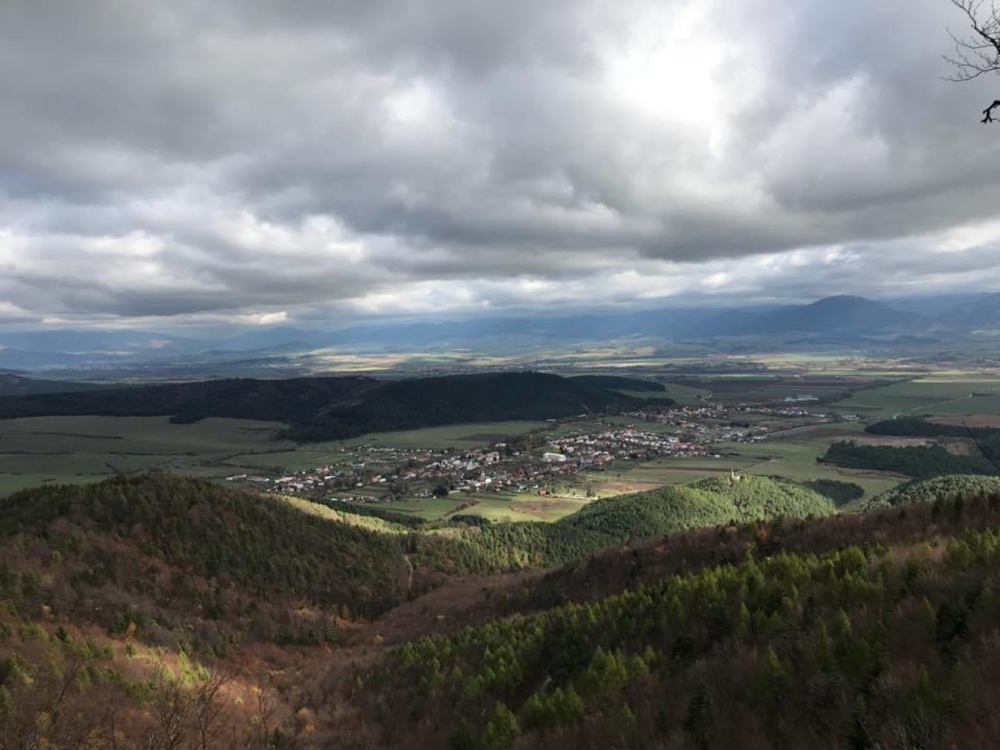

Dvanásť zastavení, dvanásť príbehov. Históriu mestečka pod hradom Zniev vám nevyrozpráva učebnica, ale postavy, ktoré ju naozaj žili — vo filmových príbehoch nakrútených priamo tu.
Trasa vedie okolo najvýznamnejších budov a miest mestečka — od cintorína cez kláštor až po kalváriu.
Na každej tabuli nájdete QR kód, ktorý vás prenesie na stránku zastavenia s filmovým príbehom.
Históriu vám vyrozprávajú postavy, ktoré ju žili — richtár, mních olejkár, astronómka či nočný hlásnik.
Na konci cesty si v kvíze overte, koľko ste si zapamätali — a získajte titul čestného Znievčana.

Najstarší písomný prameň k dejinám Turca spomína kláštor benediktínov s kostolom sv. Hypolita.
Kláštor preberá Rád premonštrátov. Ich kamenná huta vybudovala väčšinu gotických kostolov v Turci.
Kláštor pod Znievom sa stáva kráľovským mestečkom — práva si udrží celé štyri storočia.
Kláštor prestavujú do renesančnej podoby a zakladajú najstaršiu botanickú záhradu na liečivé rastliny.
Umelé koryto Vríce napája rybníky, poháňa mlyn a zásobuje najstaršie uhorské papierne.
Počas rebélie voči jezuitom je popravený richtár Ján Kužel. Mestečko prichádza o mestské práva.
Jezuiti stavajú kostol Sv. Kríža s osemuholníkovým múrom, tromi bránami a šiestimi kaplnkami.
Znievsky rodák, nitriansky biskup Jozef Kluch, obnovuje poškodenú kalváriu z vlastných prostriedkov.
3. októbra sa otvára prvé slovenské katolícke patronátne gymnázium na čele s Martinom Čulenom.
Ministerský dekrét ukončuje činnosť gymnázia — oficiálne pre „hygienické podmienky“.
Otvára sa tretia budova gymnázia, jedna z najmodernejších škôl republiky. Pozdravil ju aj prezident Beneš.
Gymnázium sa sťahuje do Turčianskych Teplíc. Pokračovateľkou sa stáva základná škola, ktorá tu sídli dodnes.
Potiahnite do strán →